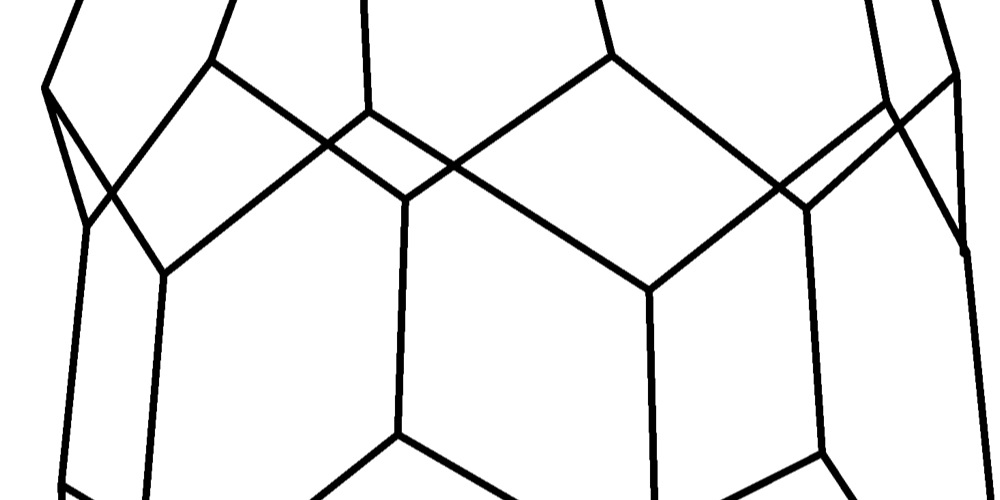
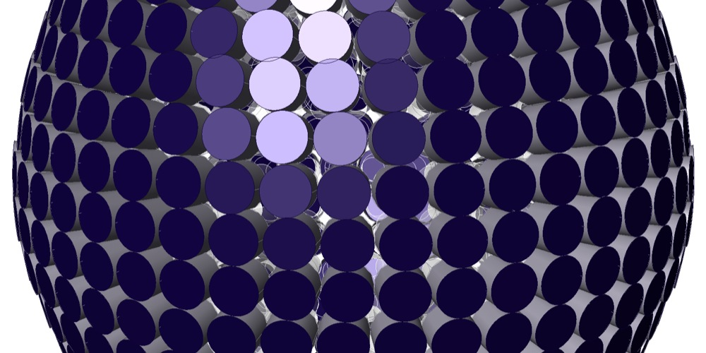
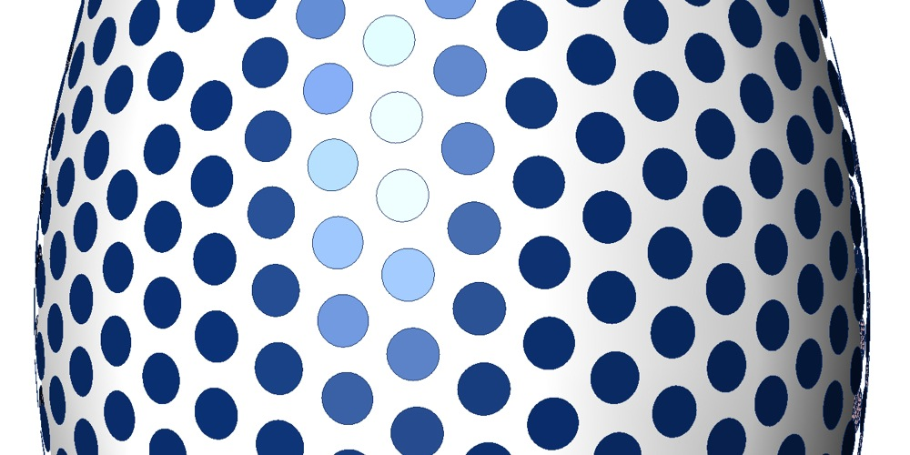
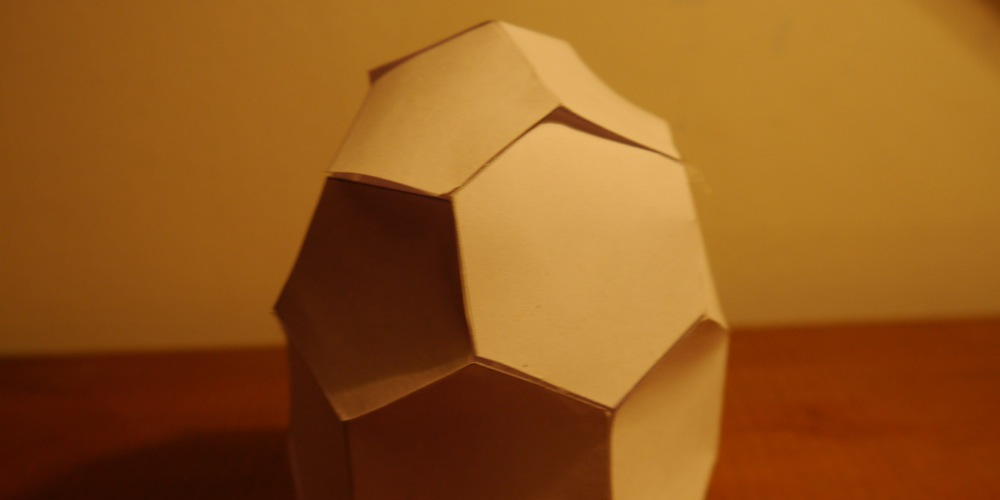
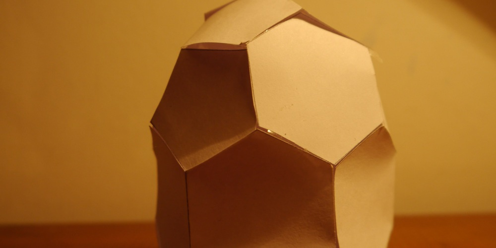
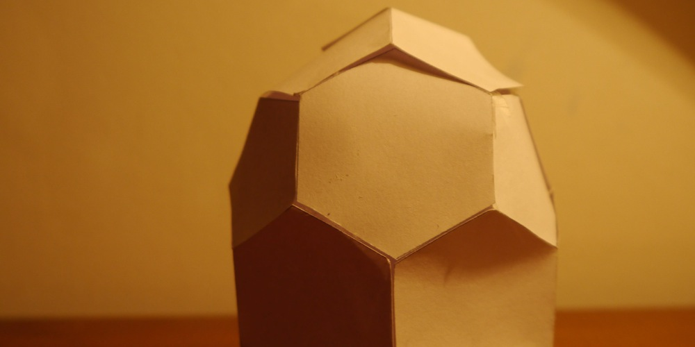

Brunel light show
In the winter of 20014 I was introduced to a man called Hal Wyne Jones. He told me he was planning to curate an exhibition of light in the Brunel Goods shed in Stroud. I happened to at the time to be working on a design to use mirrors to concentrate solar energy. He kindly invited me to contribute to the exhibition. In return I offered to help him solve the geometrical challenges of some of his pieces. I used the power of various algorithms I had created in the graphical programming environment of the Grasshopper plug-in, for the 3d modelling software Rhinoceros.
One idea we worked on was to describe the edges of an octahedron with a single laser beam and multiple mirrors.
Another was to create a perfect 3d egg shape using seven hundred circular led solar lights. Initially I tried a circle packing algorithm constricted to the surface of a 3d generated egg shape, unfortunately this didn't produce an even and uniform distribution, but left occasional gaps. Hal had the idea to treat each end as a geodesic sphere, which could at least be broken down into pentagons and hexagons. Allowing a tiling patern of six and seven circles per modules. The question no was how to connect the two ends. I tried various combinations of projecting polyhedral onto the gap, before deciding it was impossible.
While searching for a solution I read someone had discovered an improbable egg shaped carbon molecule, by chemically fusing one of the hexagons of a carbon Bucky ball into two pentagons. I meticulously copied the photo, and created a paper model. Sadly upon gluing the last panel I discovered that it wasn't symmetrical, it it had I flattened point.
Finally I decided to see if I could make up my own egg shaped polyhedron. It was actually a really amazing experience. The strange rules which govern whats possible to do in terms of making shapes using only pentagons and hexagons where revealed to me.
To my delight I discovered a configuration which used only twelve hexagons and eleven pentagons. I had made the top first then started at the bottom. It was a real joy to find the lid fitted perfectly.
